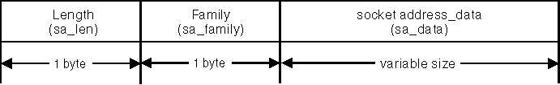

The sockaddr data structure is used to provide a generic name for a socket.
The following figure illustrates this data structure:
sockaddr Structure

The <SYS\SOCKET.H> file contains this data structure. The sa_len field specifies how long the address is; this field is only used with routing sockets. The family (sa_family) identifies which protocol family this address corresponds to. The contents of the socket address data (sa_data) field depend on the protocol in use.
Additional data structures are defined that correspond to a particular protocol family and overlay the sockaddr structure. The types of socket address data structures are as follows:
Socket Address Data Structures
┌────────────────────────────────────────────────────────────────────┐ │Data Structure sa_family Value Protocol Header File │ ├────────────────────────────────────────────────────────────────────┤ │struct sockaddr_in AF_INET TCP/IP <NETINET\IN.H> │ ├────────────────────────────────────────────────────────────────────┤ │struct sockaddr_un AF_OS2 or Local IPC <SYS\UN.H> │ │ AF_UNIX │ ├────────────────────────────────────────────────────────────────────┤ │struct sockaddr_nb AF_NETBIOS or NetBIOS <NETNB\NB.H> │ │ AF_NB │ └────────────────────────────────────────────────────────────────────┘
The contents of the various socket addresses are as follows:
Internet